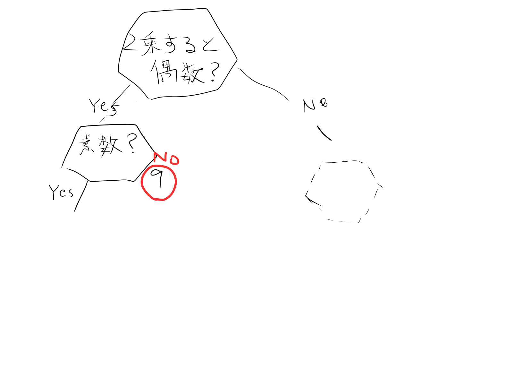

かわせみのページ
プログラミングを利用して作りたいものを作る
pycharmを使って
まず、授業のまとめ
ライブラリとは、よく使う機能や便利な機能を簡単に使えるようにした、便利ツール
モジュールと言ったり、パッケージと言ったりもする。プログラムを簡単にするための便利ツール
下記のプログラムは、50から100の間の乱数を整数で発生させる例
randomというライブラリのrandintという命令文を使っています。
import random
a = random.randint(50, 100)
print(a)
・標準ライブラリと外部ライブラリ
標準ライブラリ：Pythonにもともと入っているライブラリ
外部ライブラリ：世界中の開発者が他の人も使えるように公開しているライブラリ
・標準ライブラリの使い方
乱数の例のようにimportして使います。
・外部ライブラリの使い方
外部ライブラリはimportする前にインストールする。
Winはコマンドプロンプト
pip install ライブラリ名というコマンドでインストール
AppleSiliconなどでpipでうまくインストールできない場合は、下記のようにcondaで試す。
conda install ライブラリ名
ライブラリ名のところは、ライブラリ名でない場合もあるので
pipの場合はPyPi.org
condaの場合はConda.orgで検索して、インストール
webを検索していたらpython上でWikipedeiaの内容を表示できる。そこでwebに書いてあった下記のプログラムを自分のパソコンにコピーしてみました。
import wikipedia
# キーワードを設定
keyword = "犬"
# キーワードで検索
wikipedia.set_lang("ja")
result = wikipedia.search(keyword)
print("検索結果",result)
print("最初の検索結果を表示")
page_data = wikipedia.page(result[0])
print(page_data.content)
本日の課題
私は、アキネーターさんを作ってみました。
スマホアプリほどの膨大な情報量だと実現は難しいので、１～１０の中から思い浮かべた数字を当てるという簡易的なアキネーターさんにしました。

プログラミングをするときは、図式化するとやりやすいです。
大きくグループ分けをし段々と一つに絞っていくことで当てることができます。
ウミガメのスープに似たような感じですね。
最後にキーワードを設定して答えの数字についてWikipediaに解説してもらう機能を付けました。
最後に、Wikipediaの検索がキーワードによって変わるのでそれぞれの階層にキーワード＝Xを付け足し
wikipedia.set_lang("ja")
result = wikipedia.search(keyword)
上記のように設定して終わりです。
下にcodeを貼ります！遊んでみてください。
print("１から１０の中から好きな数字を一つ思い浮かべてください（大文字でYES/NOを答えてください。）")
q1=input("２乗した際に奇数になりますか？YES/NO ")
if q1 =="YES":
q2 = input("その数字は素数ですか？YES/NO ")
if q2 == "NO":
print("あなたが思い浮かべた数字は９ですね")
keyword = "9"
elif q2 == "YES":
q3 = input("5で割り切れますか？YES/NO ")
if q3 == "YES":
print("あなたが思い浮かべた数字は５ですね")
keyword = "5"
elif q3=="NO":
q4 = input("二乗すると二桁になりますか？YES/NO ")
if q4 =="YES":
print("あなたが思い浮かべた数字は7ですね")
keyword = "7"
elif q4=="NO":
q5 = input("三乗すると二桁になりますか?YES/NO ")
if q5 == "YES":
print("あなたが思い浮かべた数字は3ですね")
keyword = "3"
elif q5=="NO":
print("あなたが思い浮かべた数字は1ですね")
keyword = "1"
else:
print("正しく入力してください")
else:
print("正しく入力してください")
else:
print("正しく入力してください")
else:
print("正しく入力してください")
elif q1 =="NO":
q6 = input("不吉な数ですか？YES/NO ")
if q6 =="YES":
print("あなたが思い浮かべた数字は4ですね")
keyword = "4"
elif q6=="NO":
q7 = input("二乗すると三桁になりますか？YES/NO ")
if q7 =="YES":
print("あなたが思い浮かべた数字は10ですね")
keyword = "10"
elif q7 =="NO":
q8 = input("二乗すると一桁ですか?YES/NO ")
if q8 =="YES":
print("あなたが思い浮かべた数字は２ですね")
keyword = "2"
elif q8=="NO":
q9 = input("135を足して３でわりきれますか?YES/NO ")
if q9 =="YES":
print("あなたが思い浮かべた数字は6ですね")
keyword = "6"
elif q9 =="NO":
print("あなたが思い浮かべた数字は8ですね")
keyword = "8"
else:
print("正しく入力してください")
else:
print("正しく入力してください")
else:
print("正しく入力してください")
else:
print("正しく入力してください")
else:
print("正しく入力してください")
import wikipedia
# キーワードで検索
wikipedia.set_lang("ja")
result = wikipedia.search(keyword)
print(keyword,"について",result)
print("最初の検索結果を表示")
page_data = wikipedia.page(result[0])
print(page_data.content)